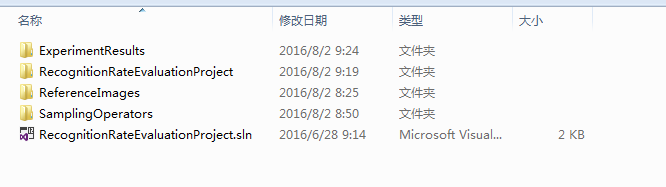
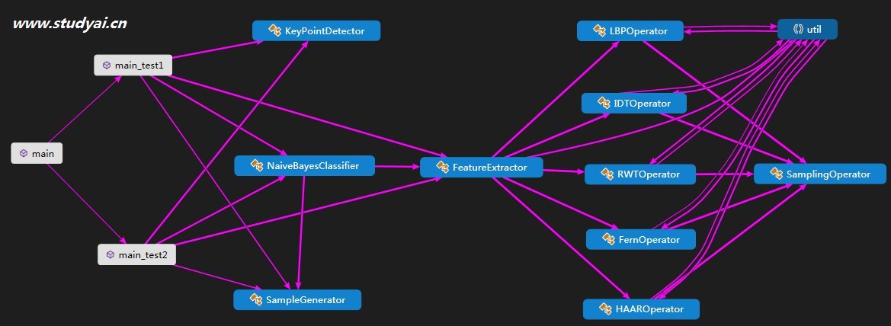
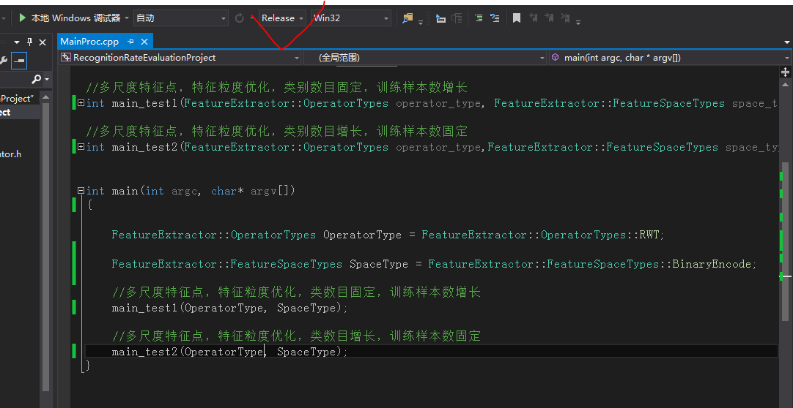
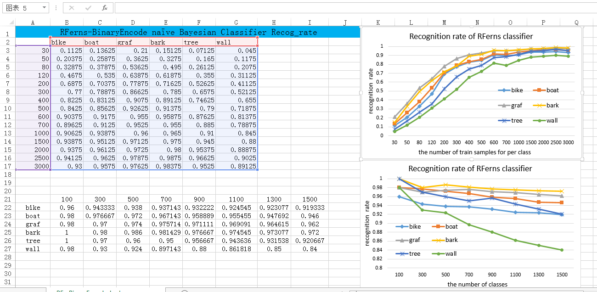
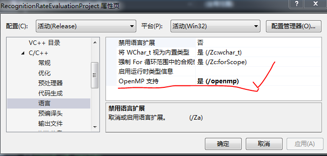
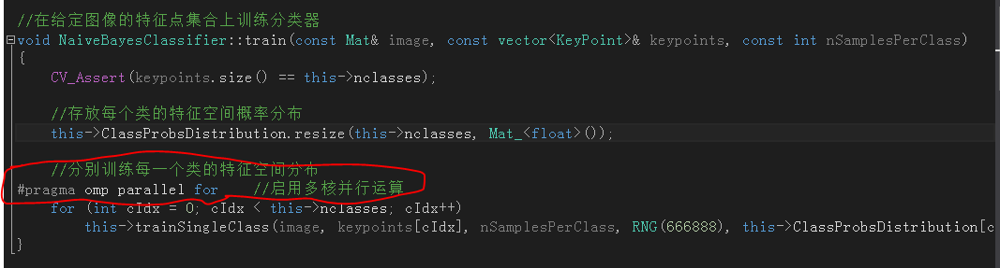

This html page describes how to run the experiemt source codes proposed in the paper entitled as "Random-distributed Multi-granular Features for Keypoints Recognition"
Step1. Dowload the source codes
We have uploaded the source codes to Baidu Cloud. you can go to dowload it as follows:
- 1. Open the link with your web browser: click to dowload
- 2. input the password to get start: 6nth
Step2. Compiling Environment and Dependency
Our project was developed with Visual Studio 2013 and OpenCV library On Widonws-7 System:
-
1. Compiling Environment:
Install Visual Studio 2013 on your computer. Maybe other VS versions can also work, you can try it. -
2. Dependency library:
The source codes depend on OpenCV library. The OpenCV version we used is 2.4.9. The OpenCV property files are named as : OpenCV249Debug.props for debug model and OpenCV249Release.props for release model. From the props file, you can see where the opencv package is installed in our computer. you can change the pathes to fit your environment. Other versions like 2.4.X or 3.X may be also used successfully. You can try it.
Step3. The Project Files
If you have successfully downlod the project zip file from Baidu Cloud, unzip it and you will
obtain a file folder like this:

The folder ExperimentResults is used to contain the evaluation files with the form of "csv".
The folder ReferenceImages is used to contain the reference images. We will detect keypoints on them.
The folder SamplingOperators is used to contain the sampling operators with optimal aperture sizes. the files will be read by FeatureExtractor class.
The folder RecognitionRateEvaluationProject is used to contain the source code files like .cpp and .hpp, and the opencv configure files .props
Double click the visual studio solution file "RecognitionRateEvaluationProject.sln" to open the project with your visual studio.
Step4. The Project DGML
The graph is automatic generated DGML using visual studio code analysis tools, which describes the basic skeleton of our keypoints recognition project.

The recognition rate tests for each kind of naive bayesian classifier embeded with different sampling operator
are carried out in two cases:
in the first case (the main_test1 in above graph image),
the number of keypoints on each reference image is kept constant (equals 800 in our experiments) but the number of
training samples for per keypoint is gradually increasing from 30 to 3000;
in the secong case (the main_test2 in above graph image),
the number of training samples for per keypoint is kept constant (equals 2000 in our experiments) but the number of
keypoints on each reference image is gradually increasing from 100 to 1500;
The experiment results are illustrated using two images as follows:
Step5. Run The Project
The C++ stardard entry function int main(int argc, char* argv[]) is in the MainProc.cpp file, As the below image shows:

We recommend that you compile the project with Release model instead of Debug model to make it run faster.
You can specify the kind of feature operator and the kind of feature space by the codes like this:
FeatureExtractor::OperatorTypes OperatorType = FeatureExtractor::OperatorTypes::RWT;
FeatureExtractor::FeatureSpaceTypes SpaceType = FeatureExtractor::FeatureSpaceTypes::BinaryEncode;
The OperatorTypes can be set as follows:
enum OperatorTypes { IDT = 0, HAAR = 1, RWT = 2, LBP = 3, FERN = 4 };//特征采样算子的类型
The FeatureSpaceTypes can be set as follows:
enum FeatureSpaceTypes { BinaryEncode = 0, UniformDiscretize = 1, CyclicBinaryEncode = 2 };//特征空间的类型
The main_test1 and main_test2 will be run on six reference images, which need long time to run over largely depend on your computer. you can only run main_test1 by disabling main_test2; or otherwise.
When the project start running, The FeatureExtractor class will try to read the sampling operator file that contains
the optimal sampling operators. So, you should not move the folder SamplingOperators and rename its files.
If fail to read optimal_sampling_operator file, it will randomly generated a specified number of sampling operators
under the default aperture constraint.
Step6. Save And Plot Experiment Results
The experimental results are saved in .csv files at the folder ExperimentResults.
The results of main_test1 is like this:
string fileName = operatorTypeName + "-" + spaceTypeName + "-" + DataSetName[imgIdx] + "-recog_rate-test1.csv";
The results of main_test2 is like this:
string fileName = operatorTypeName + "-" + spaceTypeName + "-" + DataSetName[imgIdx] + "-recog_rate-test2.csv";
Once the specified evaluation run over, you can get the results in the folder ExperimentResults. Then, you can easily copy the data in csv files into Excel to plot the recognition rate curves. we have show one of our experiment results in the image below:
Step7. Parallel Computing using OpenMP library
Because the learning of class probability distributions of K keypoints can be separated as K separated problems, which can be computed independently . So, we employ the OpenMP parallel technique to accelerate our project. The usage of OpenMP in visual studio is very easy.
-
The step of using OpenMP in visual studio:
- Step1: Copy the OpenMP dll from Microsoft Visual Studio 12.0\VC\lib\arm into your project directory RecognitionRateEvaluationProject\RecognitionRateEvaluationProject:vcomp120.dll for release model; and vcomp120d.dll for debug model. We have done this for you. if you use other version of visual studio, you can do this by yourself. the dll file name will be like vcomp110.dll etc..
- Step2: Set your visual studio configuration to allow the using of OpenMP during compiling: 
- Step3: Add a compling instruction above the loops,as follows: 
CPU Utilization Rate Comparision
Since our computer is Dual-Core-Four-Threads, the for loop will be divided into four parts. Each part run on a single thread.